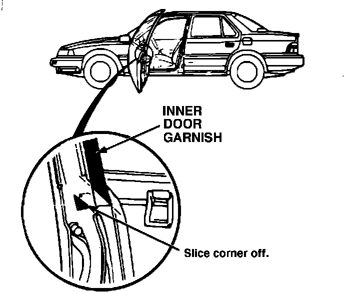
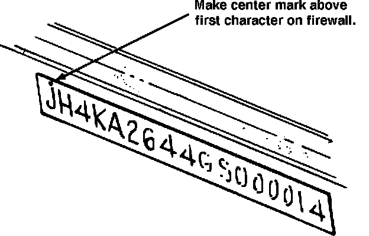

Front Door Opening Seal - Cut/Torn
88acura01February 29, 1988
YEAR MODEL APPLICATION
'86-87 LEGEND ALL
SEDAN
86-021
Front Door Opening Seal Cut (Supersedes 86-021, dated December 8, 1986)
PROBLEM The front door opening seal may be cut or torn by the door inner garnish.
CORRECTIVE ACTION
^ Replace both the left and right door opening seals on all 1986 and 1987 models, whether they are damaged or not, with the improved parts listed under PARTS INFORMATION.
NOTE: Replace the seals at the next regular service or other dealer visit.

^ On cars up to VIN KA2...HC004381, lift the corner of the inner door garnish and use a sharp razor blade to carefully slice pan of the corner off diagonally.
NOTE: Slip a thin piece of wood or plastic under the garnish to avoid scratching the paint.

^ Center punch a completion mark on the firewall above the first character of the VIN, then apply a protective coating of grease to the VIN.
PARTS INFORMATION
Front door opening seal
left right
Grey 72355-SD4-003ZA 72315-SD4-003ZA
Blue 72355-SD4-003ZB 72315-SD4-003ZB
Sand 72355-SD4-003ZC 72315-SD4-003ZC
Brown 72355-SD4-003ZD 72315-SD4-003ZD
WARRANTY CLAIM INFORMATION
Operation number: 835175
Flat rate time: 1.0 hour
Failed part P/N: 72355-SD4-003
Defect code: 021
Contention code: A01